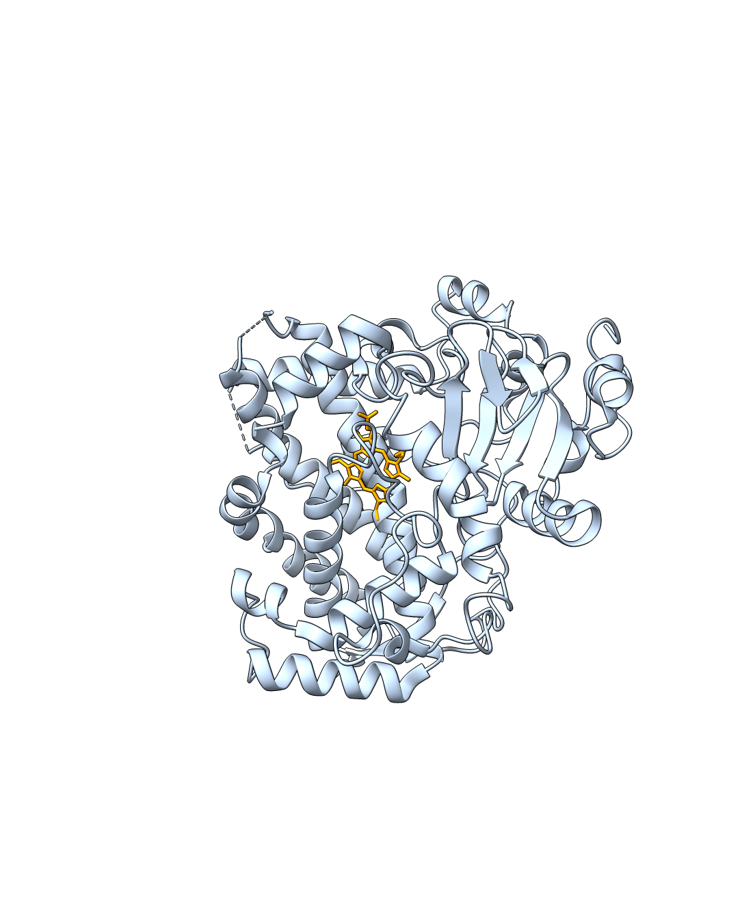
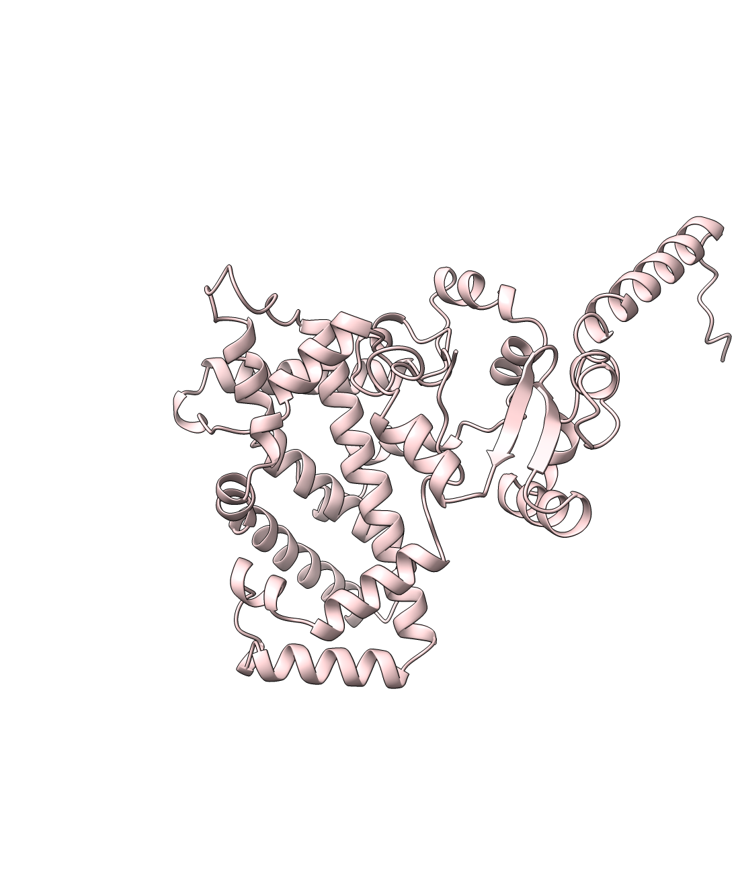
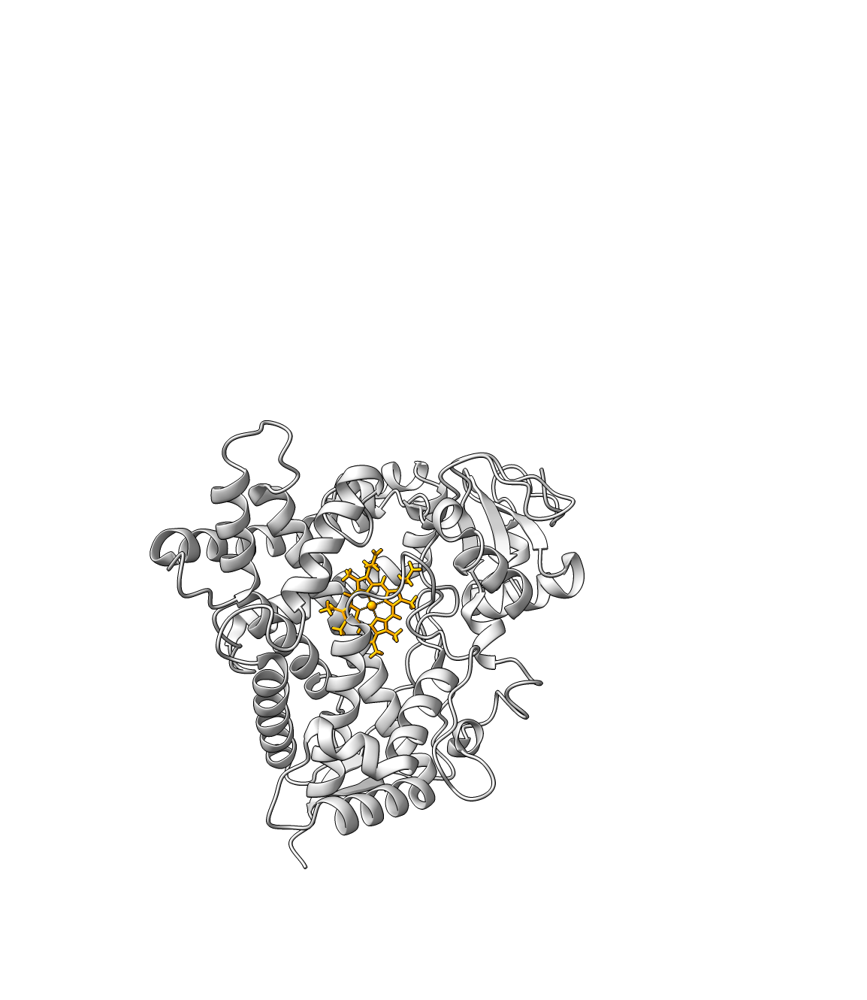
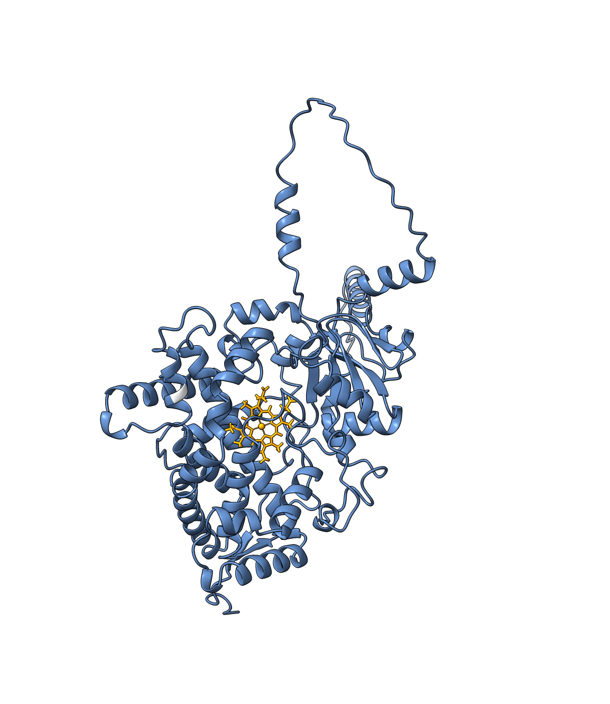

Explora los modelos tridimensionales generados durante el análisis estructural de variantes farmacogenómicas en CYP3A5 y CYP2C19.


Modelo derivado de alteración de splicing con pérdida del dominio C-terminal.
Explorar modelo
Estructura de referencia utilizada para análisis estructural y docking molecular.
Explorar modelo
Modelos interactivos desarrollados como material complementario del cartel científico.